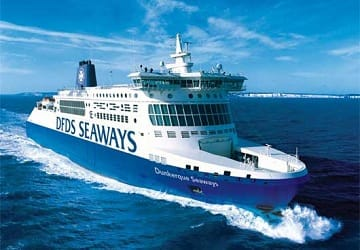
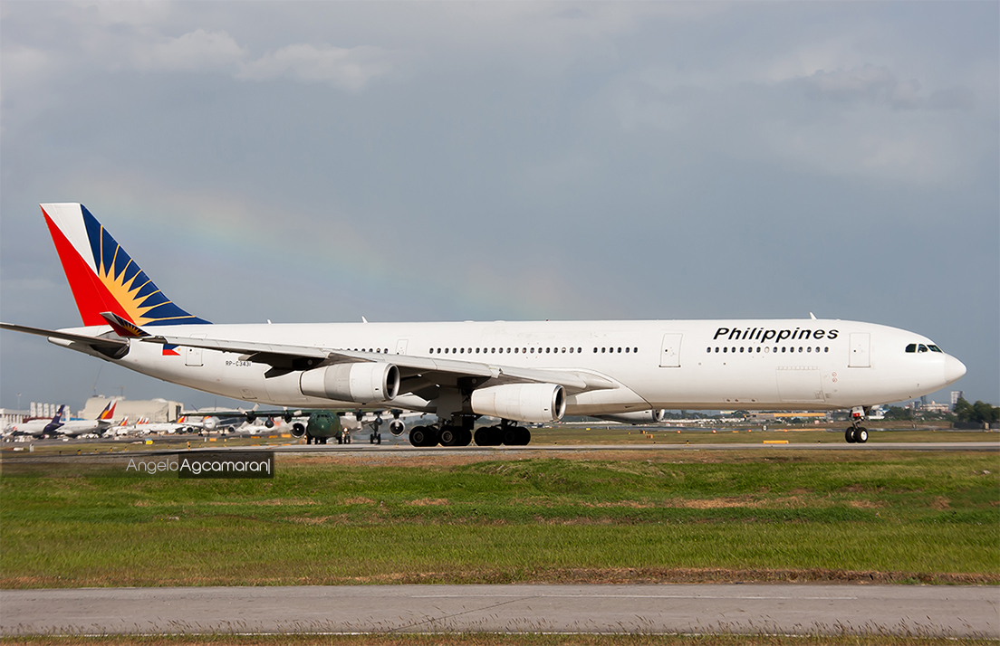
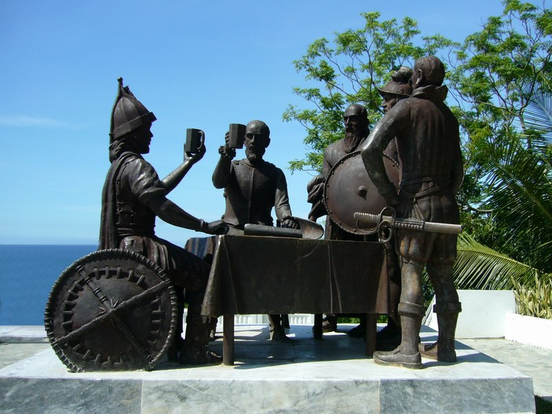
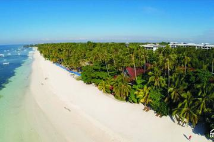

Maayong pag-abot sa BOHOL!
BOHOL is a 1st provincial income class island province of the Philippines located in the Central Visayas region, consisting of the island itself and 75 minor surrounding islands. Its capital is Tagbilaran. With a land area of 4,821 km2 (1,861 sq mi) and a coastline 261 km (162 mi) long, Bohol is the tenth largest island of the Philippines. To the west of Bohol is Cebu, to the northeast is the island of Leyte and to the south, across the Bohol Sea, is Mindanao.
The province of Bohol is a first-class province divided into 3 congressional districts, comprising 1 component city and 47 municipalities. It has 1,109 barangays.
The province is a popular tourist destination with its beaches and resorts. The Chocolate Hills, numerous mounds of brown-coloured limestone formations, are the most popular attraction. The formations can be seen by land (climbing the highest point) or by air via ultralight air tours. Panglao Island, located just southwest of Tagbilaran, is famous for its diving locations and is routinely listed as one of the top ten diving locations in the world. Numerous tourist resorts and dive centers dot the southern beaches. The Philippine tarsier, amongst the world's smallest primates, is indigenous to the island.
How to get
there

Ferry
Airplanes
Things to do

Sandugo Blood Compact
Panglao Island
BOHOL is the BEST
The island province of Bohol has much to offer in terms of history and natural attractions. One of the loveliest islands in the Visayas, Bohol's coastline is skimmed by gentle coves and white sand beaches Many highways snake along pristine beaches and rustic rivers where the tourist can stop at any point and jump in. The province’s dive spots, of which there are about a dozen, are said to be among the world's best.
Bohol is located in the central portion of the Visayas lying between Cebu to the northwest and Leyte to the northeast. The province is about 700 kilometers south of Manila and 70 kilometers southeast of Mactan Island.
Bohol is like a jade brooch set on a velvet-blue sea. Its fertile land has hills that roll gently around lush forests and grassy meadows. Marine life - from schools of tiny reef fish to bigger pods of dolphins and whales - teem in the surrounding waters. The province is the perfect arena for scuba diving, kayaking, trekking and cave exploration. For the less adventurous, it offers leisurely pursuits like cruising, swimming, snorkeling or, simply, collecting seashells by the seashore.
Accomodation
Hotel, Resort, Tour Packages